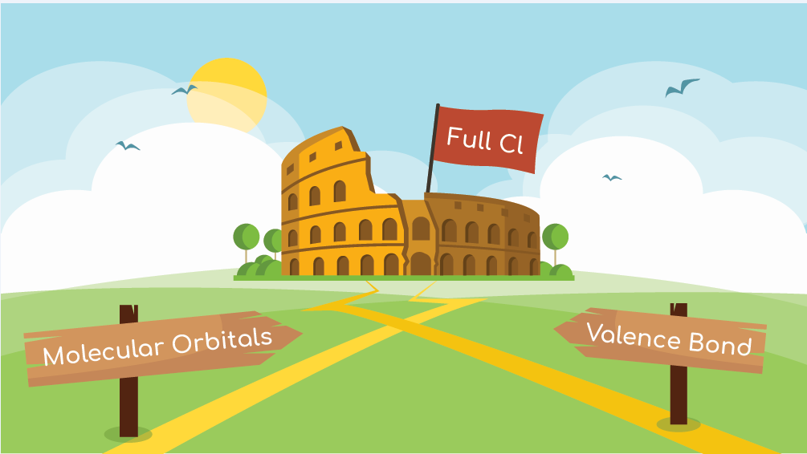
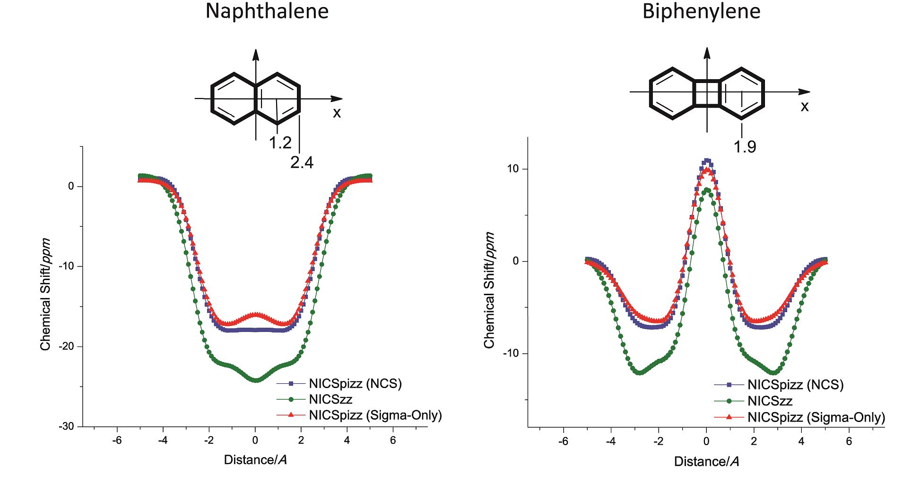

Renana Gershoni Poranne is a Senior Scientist in the group of Prof. Dr. Peter Chen
at the Laboratorium für Organische Chemie at the ETH Zürich. She was appointed in July 2017, following a two-year post-doctoral period in the same group.
She completed her PhD studies under the supervision of Prof. Amnon Stanger
in the Schulich Faculty of Chemistry at the Technion,
working on elucidation of the properties of aromatic compounds and developing methodologies for the identification and quantification of aromaticity in polycylic aromatic hydrocarbons.
Prior to that, she received her MSc Summa cum Laude for her work on functionlization of corannulene in the group of Prof. Ehud Keinan.
Dr. Gershoni Poranne's research interests lie in the field of computational physical organic chemistry, with particular emphasis on development of methods
and tools for better understanding of mechanisms and physical properties of organic and organo-metallic compounds. Her work focuses on questions related to
aromaticity, dispersion, metallophilic interactions, catalysis, and mechanism elucidation.
Publications

Chemistry - A European Journal, December 2017
Reponse to “Covalent Bonding and Charge Shift Bonds: Comment on ‘The Carbon–Nitrogen Bonds in Ammonium Compounds Are Charge Shift Bonds’
Chemistry - A European Journal, December 2017

The Carbon–Nitrogen Bonds in Ammonium Compounds Are Charge Shift Bonds
Chemistry - A European Journal, March 2017


Tetraazaacenes Containing Four-Membered Rings in Different Oxidation States. Are They Aromatic? A Computational Study
The Journal of Organic Chemistry, November 2014

Chemistry - A European Journal, March 2014
The NICS-XY-Scan: Identification of Local and Global Ring Currents in Multi-Ring Systems
Chemistry - A European Journal, March 2014

Concurrence between Current Density, Nucleus-Independent Chemical Shifts, and Aromatic Stabilization Energy: The Case of Isomeric [4]- and [5]Phenylenes
The Journal of Organic Chemistry, July 2013